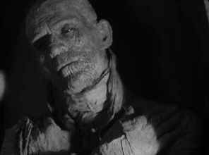

|
In
1932 Universal continued its grip on movie horror with the
introduction of another franchise character, The Mummy.
Written directly for the screen, the highly romantic horror
movie depended more on character than special effects and shock.
 |
|
The Mummy reanimates.
©Universal |
Archeologists working on a significant Egyptian dig discover a sarcophagus containing
a centuries old mummy. An accompanying box found is emblazoned with
a warning against opening. One of the diggers cannot resist the
temptation and as he examines the contents of the box and translates
the scroll found inside, the words send a message deep into the
past, which awakens the mummified High Priest Imhotep to the present
in an elegantly simple reanimation sequence.
The mummy later shows up a decade later in
modern Egyptian dress as a mysterious scholar, Ardeth Bey. Bey has set his sights on repossessing his lost love, Anck-es-en-Amon, whose spirit he believes is roaming around in the soul of
Britisher Helen Grosvenor. Bey calls upon the powers of darkness to
aid in his pursuit of the girl, but the fate of Imhotep must end in
pain.
Boris Karloff gives
the title character a poignant animation. Karloff, playing both high
priest Imhotep and his modern incarnation, Ardeth Bey, drags his
body stiffly around as the shrouded mummy or slips into scenes with
the stealth of a cat as Bey. Behind Karloff’s eyes are a longing
and sadness that penetrate every frame in which appears. This is
truly a star turn.
The Mummy
is a masterpiece of restraint. The directing debut of great
cinematographer Karl Freund, The Mummy
is framed in shadows and eerie key lighting. Freund gets it right
his first time out, relying on the power of his camera to create a
fertile ambiance for romance coached in horror terms. More stalker
than horror movie Freund’s The Mummy is reminiscent of the great
German expressionist films. Freund
does an outstanding job of maintaining a consistent feeling through
the film, both in the modern and ancient scenes.
Film historian Paul Jenson delivers a stiff
second audio commentary for the film. While some of Jenson’s
observations clarify gaps in the plot, his digressions concerning
the actors are not especially interesting. It’s not easy listening
to Jenson. Universal should have chanted some old Mummy
incantations to revive Boris Karloff for a second audio. Now, that
would have been something.
The Mummy is nicely
preserved quite by Universal. Though there is some element
deterioration, the print is quite sharp and the dirt and scratches
are seldom distracting. The Karl Freund photography retains its
atmospheric lighting with good dynamic contrast range. Don’t
expect a Dolby Digital surround extravaganza on this incarnation of The
Mummy. Be thankful for clear mono sound without hiss.
|